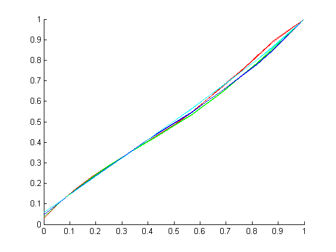

function my_osd2trc
colorcode = 'rgbcmyk';
colorindex = 1;
clf
hold on
for ct = [80 60 40 20]
for br = [20 40 60 80 100]
gray = my_para2gray(ct,br);
switch (br)
case {100}
brscale = 0.95;
case {60}
brscale = 1.2;
case {40}
brscale = 1.6;
case {20}
brscale = 2.38;
otherwise
brscale = 1;
end
switch (ct)
case {80}
ctscale = 1;
gamma = 1.95;
case {60}
ctscale = 1.5;
gamma = 2.;
case {40}
ctscale = 2.55;
gamma = 2.0;
case {20}
ctscale = 4.2;
gamma = 2.0;
otherwise
ctscale = 1;
end
x = gray(:,1) / gray(16,1);
y = gray(:,2)/gray(16,2);
y2 = y .^ (1/gamma) ;
plot(x,y2,colorcode(colorindex));
end
colorindex = colorindex + 1;
end
end
function gray = osd2trc (contrast, brightness, gamma)
x = 0:255;
u = x2u(x, contrast, brightness);
v = u2v(u, gamma);
gray = zeros(256,2);
gray(:,1) = x;
gray(:,2) = v;
return
function u = x2u (x, contrast, brightness)
offsetlut = [-82 -66 -50 -33 -17 0;
-68 -55 -41 -27 -14 0;
-60 -48 -37 -26 -13 0;
-52 -42 -31 -21 -11 0;
-46 -36 -27 -18 -10 0;
-32 -24 -16 -12 -8 0];
if contrast < 50 || contrast > 90
display('out of range contrast')
return
end
switch contrast
case {50, 60, 70, 80, 90}
offsettab = offsetlut(contrast/10-4,:);
otherwise
stop_contrast1 = floor(contrast/10)*10;
stop_contrast2 = stop_contrast1 + 10;
index_contrast1 = stop_contrast1/10 - 4;
index_contrast2 = stop_contrast2/10 - 4;
dist_contrast1 = contrast - stop_contrast1;
dist_contrast2 = stop_contrast2 - contrast;
ratio1 = dist_contrast2 / (dist_contrast1+dist_contrast2);
ratio2 = dist_contrast1 / (dist_contrast1+dist_contrast2);
offsettab = ratio1 * offsetlut(index_contrast1,:) + ratio2 * offsetlut(index_contrast2,:) ;
end
if brightness < 50 || brightness > 100
display('out of range brightness')
return
end
switch brightness
case {50, 60, 70, 80, 90, 100}
offset = offsettab(brightness/10 - 4);
otherwise
stop_brightness1 = floor(brightness/10)*10;
stop_brightness2 = stop_brightness1 + 10;
index_brightness1 = stop_brightness1/10 - 4;
index_brightness2 = stop_brightness2/10 - 4;
dist_brightness1 = brightness - stop_brightness1;
dist_brightness2 = stop_brightness2 - brightness;
ratio_brightness1 = dist_brightness2 / (dist_brightness1+dist_brightness2);
ratio_brightness2 = dist_brightness1 / (dist_brightness1+dist_brightness2);
offset = ratio_brightness1 * offsettab(index_brightness1) + ratio_brightness2 * offsettab(index_brightness2);
end
u1 = (contrast/100) * (x+offset);
u = (u1 + 41)/270;
end
function v = u2v (u, gamma)
if gamma == 2.2
ga = 2.165;
elseif gamma == 2.0
ga = 1.962
elseif gamma == 1.8
ga = 1.77;
else
display('wrong argument gamma')
return
end
v = 400 * (u .^ ga);
v(u < 0) = 0;
end
end
function gray = my_model1 (contrast, brightness, gamma)
offsettab_90 = [-46 -36 -27 -18 -10 0];
offsettab_80 = [-52 -42 -31 -21 -11 0];
offsettab_70 = [-60 -48 -37 -26 -13 0];
offsettab_60 = [-68 -55 -41 -27 -14 0];
offsettab_50 = [-82 -66 -50 -33 -17 0];
if gamma == 2.2
ga = 2.165;
elseif gamma == 2.0
ga = 1.962
elseif gamma == 1.8
ga = 1.77;
else
display('wrong argument gamma')
return
end
switch contrast
case {50}
offsettab = offsettab_50;
case {60}
offsettab = offsettab_60;
case {70}
offsettab = offsettab_70;
case {80}
offsettab = offsettab_80;
case {90}
offsettab = offsettab_90;
otherwise
display('wrong argument contrast')
return
end
t = 0:1/255:1;
offset = offsettab(brightness/10-4);
uprime = (contrast/100) * (255*t+offset);
uprime2 = (uprime+41)/270;
y = 400 * (uprime2 .^ ga);
y(uprime2 < 0) = 0;
plot(uprime,y)
gray = zeros(256,2);
gray(:,1) = 0:255;
gray(:,2) = y;
end
function gray = my_para2gray (contrast, brightness)
fn = my_filename(contrast, brightness);
fnmat = my_findfile(fn);
if isempty(fnmat)
disp('error finding file')
return
end
gray = my_getgray(fnmat);
return
end
function gray = my_getgray (fnmat)
load(fnmat)
meagray = zeros(256,2);
ind = 0;
for i = 1:length(mea(:,1))
r = mea(i,1);
g = mea(i,2);
b = mea(i,3);
if r==g && g==b && (ind==0 || (ind>=1 && meagray(ind,1)~=r))
ind = ind + 1;
meagray(ind,1) = r;
meagray(ind,2) = mea(i,6);
end
end
gray = meagray(1:ind,:);
end
function r = my_findfile (fn)
dlist = dir('*.mat');
for i = 1:size(dlist)
fn2 = dlist(i).name;
if strncmpi(fn2,fn,length(fn)-4)
r = fn2;
return;
end
end
r = '';
return;
end
function fn = my_filename (contrast, brightness)
fn = sprintf('DDC_CR%d_BR%d.mat',contrast,brightness);
end
